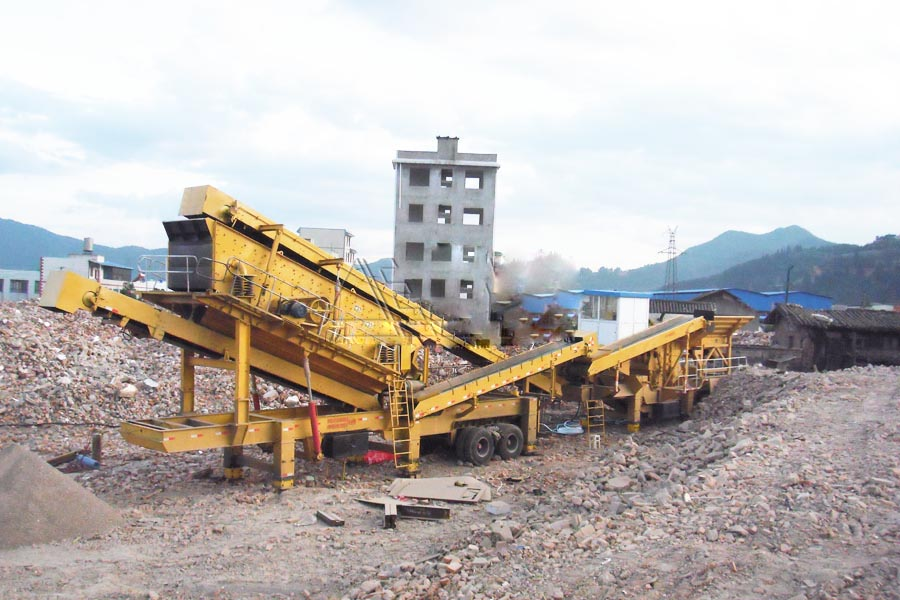
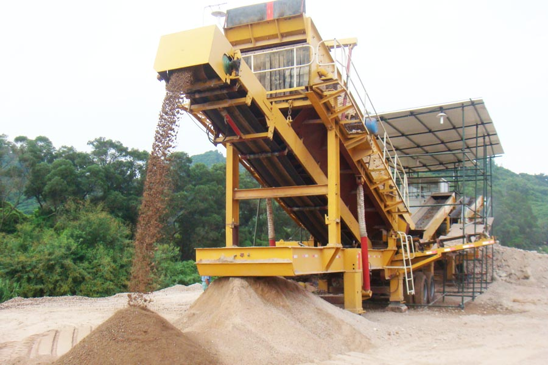

- Home >
- stone crusher >
- mobile concrete crusher plant

Construction waste crushing production line

mobile concrete crusher plant for urban construction waste crushing.
mobile concrete crusher plant
Mobile construction waste resource and its utilization by the workstations set construction waste materials, crushing, conveying, processing, re-processing and other technology equipment as a whole, through different devices combined into a powerful mobile production and processing lines, more needs to complete construction waste processing operations. The workstation has a structural optimization, rational lightweight, versatility, etc., to overcome the equipment component split display space occupied by large, decentralized operations complex defects. Achieved by the traditional “building materials → buildings → construction waste” to “Building materials → buildings → construction waste → → nascent renewable raw materials products,” the new building materials chain and circular economy, changing patterns of production and operation of low-carbon economy.

The company develops, manufactures mobile construction waste resource and its utilization of advanced workstation design, functional, high-performance, easy to operate, productive and efficient, stable and reliable operation, economic and other operating costs, relative to the fixed crusher station is concerned, the workstation can be moved like a small and medium sized processing plants, to achieve a “from here, giving back to this” in situ processing, handling, use, implement construction waste recycling, reduction, sound economic , social and ecological benefits and low-carbon economy goals.
Technical parameters:
| Model | The maximum feed size | Output (10mm or less) | Total installed power（KW） | Recommended configurations transformer（KVA） |
| YPS-200 | 450mm | 60-80 | 212 | 250 |
| YPS-280 | 450mm | 80-120 | 287 | 315 |
| YPS-260 | 600mm | 80-110 | 263 | 250 |
| YPS-350 | 600mm | 120-160 | 353 | 315 |

Our R & D, manufacturing of the following products for users to choose to use:
60t / h mobile construction waste crushing station.
100t / h mobile construction waste crushing station.
120t / h mobile construction waste crushing station.
160t / h mobile construction waste crushing station.
Mobile construction waste crushing – a combination of brick production line (moving brick factory)
Mobile construction waste treatment resources – use workstation.
200t / h and above large-scale stationary construction waste crushing station.
200t / h and above the fixed construction waste recycling processing workstation.
Construction waste treatment resources / equipment use derivatives.
Construction waste resource processing / use integrated solution.
Leave Me A Message, Now
If you have any questions regarding equipment prices, production line configuration or other problems, you can send a message to us, we will contact you soon.